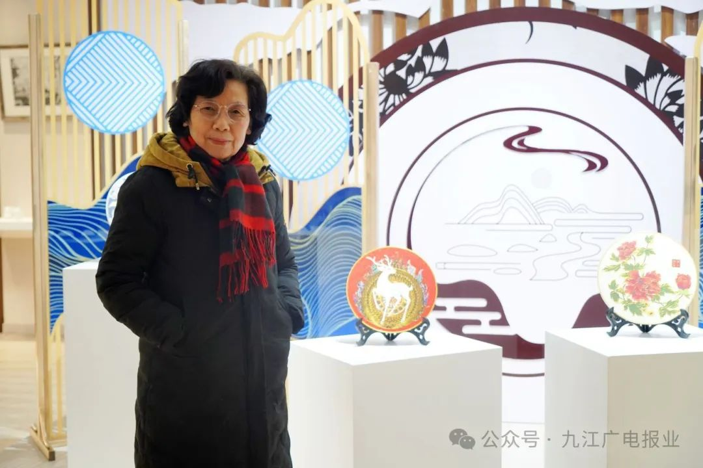
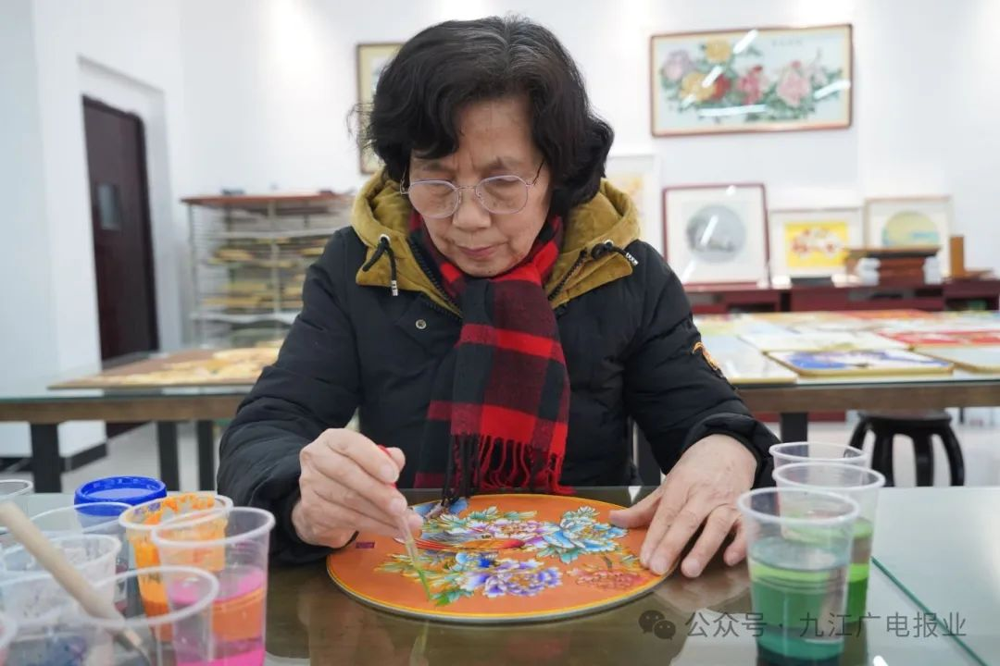
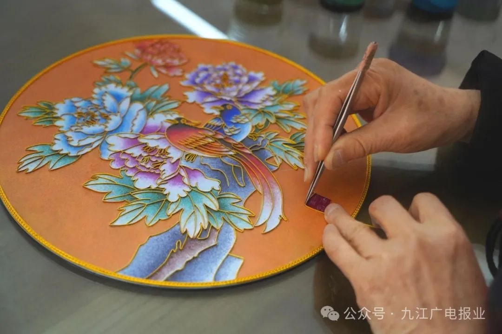
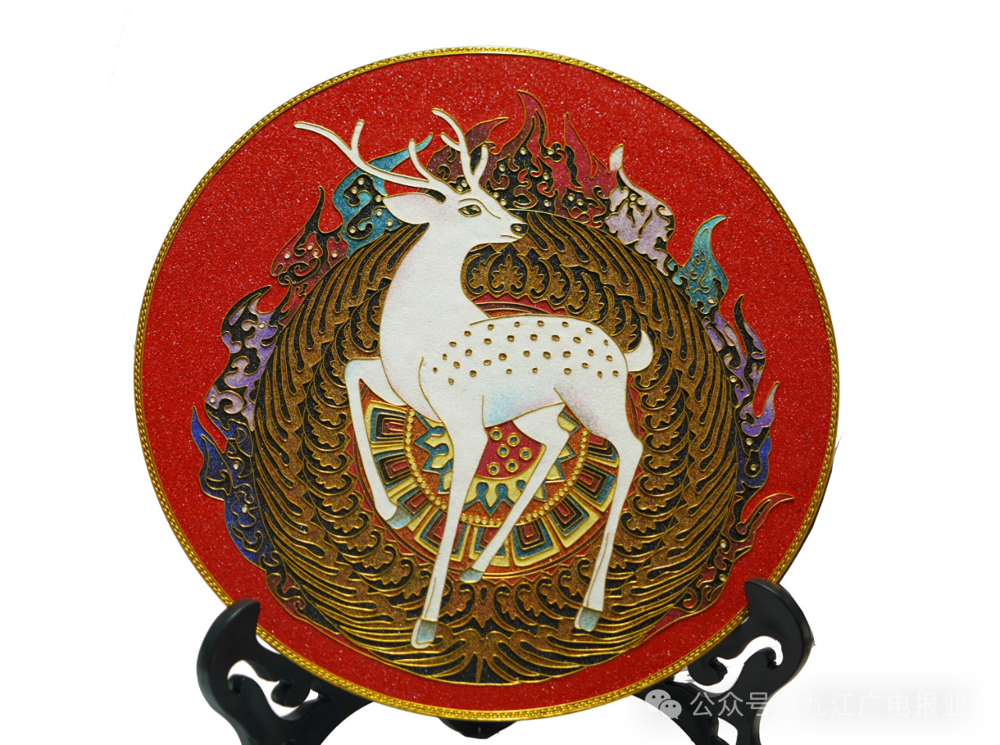
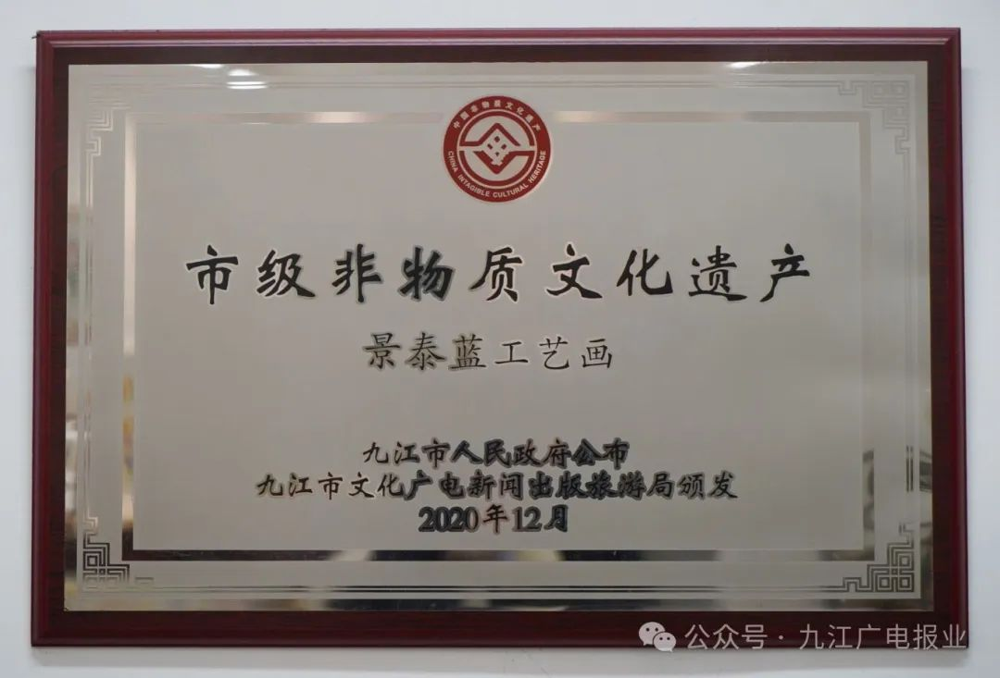
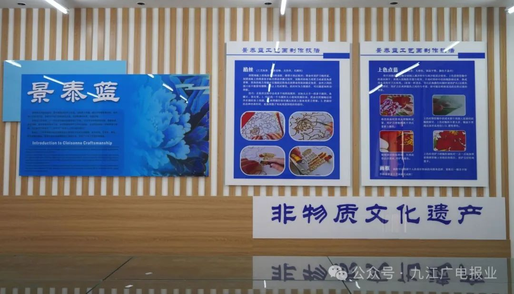
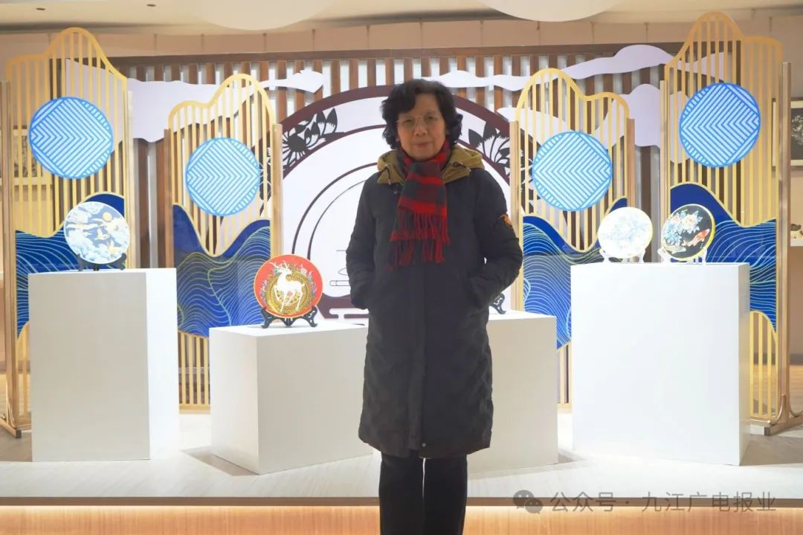

中国掐丝珐琅传承网
中国掐丝珐琅传承网
00
-
00
-
00
中国掐丝珐琅传承网
来源：“九江广电报业” 微信公众号
2024.01.26
退休逾二十载，她始终致力于创作景泰蓝艺术佳品，同时积极传承并弘扬我国非物质文化遗产。在她的努力下，景泰蓝这一700年的传统工艺在浔城焕发生机，绽放新的光彩。她就是九江市景泰蓝掐丝珐琅市级非遗传承人祝慧琼。
祝慧琼对景泰蓝的热爱源于她的童年时期，大家闺秀出身的外婆时常教导她制作景泰蓝，潜移默化地在她心中播下了热爱的种子。然而，随着年岁的增长，学业、事业、家庭及日常生活逐渐占据了生活的大部分时间，使她无暇他顾，这一爱好便被她深深埋藏在记忆的深处。
随着退休的到来，祝慧琼曾经被生活占据的时间一下子释放出来，那颗热爱景泰蓝的种子也悄然发芽。重新拾起景泰蓝的祝慧琼感觉退休生活一下子充实起来了，仿佛一道光，照亮了她的人生新篇章，使她对未来岁月有了更为美好的规划。
“景泰蓝的工艺很复杂，时代在不断变化，景泰蓝的工艺也有所改变。我小时候虽然喜欢景泰蓝，但是技术还不是那么过硬。所以退休以后我决定去广州、北京拜师学艺。”祝慧琼一边回忆，一边说道。
在广州，为了学好手艺，祝慧琼一边跟着师傅学习，一边深入基层厂房，以求实践经验。初来乍到，工人们也只是让她自己看，自己悟。为了让工人传授更多的工艺技巧，年过六旬的她和一位女工同住在一间仅容一张床位的租房里，请他们一起吃年轻人喜欢吃的麻辣烧烤。掌握了景泰蓝的基本技术后，她告别师傅和朋友，回到了九江。然而，她并未满足于已取得的成就，再度北上深造，弥补了先前技艺的不足之处。
为了静下心来做景泰蓝，祝慧琼在远离城市喧闹的好汉坡租了一处寓所。她时常从白天沉浸至深夜，甚至在不经意间迎来黎明。每一幅作品需要经过很多道工序才能够完成，而每一次的成功都在她心中增添了一份成就感。相较其他画作，祝慧琼的景泰蓝作品色彩更为艳丽，且经久不褪。无论是本地居民还是外地游客，皆被她的作品所吸引，纷纷驻足欣赏，甚至有意追随她学习技艺。
命运是多么神奇，祝慧琼的退休生活因景泰蓝而焕发出新的意义。在这绚丽的夕阳下，祝慧琼寻找到心中的那份安宁与灿烂，把生活过得如诗如画。她坚定地相信，只要心中有爱，手中握有技艺，她便能继续照亮自己的生活。
景泰蓝掐丝工艺画工艺精巧、色泽坚固亮丽、气韵华美，过去是官宦人家彰显富贵的重器。此工艺品制作于铜、金、银等底胎之上，由于底胎材料珍贵，使得成品价格高昂。
“我们结合现在的社会，要把景泰蓝普及到老百姓的家庭，就改进了底板。现在像泥板、UVC板、玻璃，都可以制作亮丽的图案。我们这个工艺可以做在任何一个物品上。我也做了一些创意，比如说我现在创作出来的扇子、琵琶琴、灯光、家具等。”祝慧琼笑道。
传统的景泰蓝需要火烤技术，现代技术可制作免烧技术。祝慧琼用合成的方法在表面再次加工，不但免烧，而且科学合理，表面更加光滑亮丽，火烧水泡都不怕，可保持百年不变色，为古老的技艺注入新的生命力。然而回忆起改进工艺的过程，祝慧琼坦言有酸、有甜，也有苦。胶水是技术创新的关键，用什么样胶水，要用多少胶水，什么时候用胶水，什么时候用什么胶，这些都需要她反反复复地试验。胶水既要凝固，又要持久，还不能影响颜料的色彩。
有时候她将成品用水泡，又放到露天晾上几天几夜，晒干后再放到水里去泡。有一次，她花一周的时间做了一幅大型的牡丹，可到了最后一个步骤，因为胶水不合适而前功尽弃。虽然内心难免有些失落，但她坚信自己一定可以做出来。功夫不负有心人，在一次又一次地失败，一次又一次地更换胶水、调整比例后，她终于成功了。望着那幅色彩亮丽的花鸟图，祝慧琼的脸上绽放出满意的笑容。
祝慧琼一心扑在景泰蓝上，感受到了老有所为、老有所乐，同时让景泰蓝这一传统艺术走进人们的日常生活，走进大学校园，也让更多的人感受到了景泰蓝的魅力。2020年，景泰蓝工艺画被列入第八批市级非物质文化遗产代表性项目名录。她的作品也受到了广泛关注，影响力远及海外。
“最近几年国家号召，要非遗进学校、进社区。根据国家需要，我也就进了职大教学，已经教了六七年了，培养了一批一批的学生，有的都已经走向社会了。”进学校以后，祝慧琼才真正开始将爱好当作事业来做。在课堂上，她倾囊相授。让她感到欣慰的是，孩子们毕业以后，有的回乡从事景泰蓝行业，有的做景泰蓝培训工作，解决了就业问题。
明年春节以后，祝慧琼计划让景泰蓝工艺走进九江市的各个社区，为一些需要兼顾孩子与工作的宝妈以及景泰蓝爱好者免费培养技能，让他们有一份属于自己的事业。
“作为我来讲，已经70多岁了，我想尽快把我这门手艺传承下去。目前九江做景泰蓝的人也不多，好像非遗传承人只有我一个。国家能够这样重视景泰蓝，政府尽心尽力培养我，那我也不能辜负他们。”祝慧琼笑道。
在传承与弘扬的道路上，祝慧琼不忘初心，砥砺前行。她希望有更多的年轻人能够加入这个行列，将景泰蓝这一传统技艺发扬光大，让景泰蓝这一千年的传统工艺将在不断创新和传承中焕发出更加璀璨的光彩。